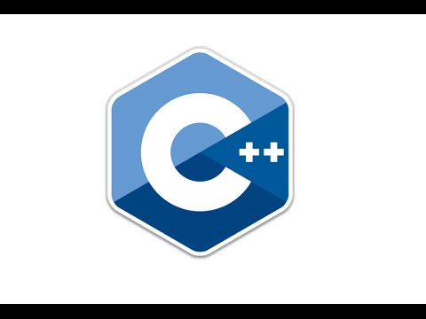

C++ is undoubtedly one of the oldest and most efficient programming languages that still continues to dominate the realm of programming. Every beginner is curious to know the Advantages and Disadvantages of C++ on the basis of which they can start their programming journey. Benefits and limitations are important to know to predict their next step.

Advantages of C++ Programming language
1. Portability
C++ offers the feature of portability or platform independence which allows the user to run the same program on different operating systems or interfaces at ease.
Suppose you write a program in LINUX OS and for some apparent reason you switch to Windows OS, you would be able to run the same program in windows as well without any error. This feature proves to be of great convenience to the programmer.
2. Object-oriented
One of the biggest advantages of C++ is the feature of object-oriented programming which includes concepts like classes, inheritance, polymorphism, data abstraction, and encapsulation that allow code reusability and makes a program even more reliable.
3. Low-level Manipulation
Since C++ is closely associated with C, which is a procedural language closely related to the machine language, C++ allows low-level manipulation of data at a certain level. Embedded systems and compiler are created with the help of C++.
Disadvantages of C++ Programming language
1. Use of Pointers
Pointers in C/C++ are a relatively difficult concept to grasp and it consumes a lot of memory. Misuse of pointers like wild pointers may cause the system to crash or behave anomalously.
2. Security Issue
Although object-oriented programming offers a lot of security to the data being handled as compared to other programming languages that are not object-oriented, like C, certain security issues still exist due to the availability of friend functions, global variables and, pointers.
3. Absence of Garbage Collector
As discussed earlier, C++ gives the user complete control of managing the computer memory using DMA. C++ lacks the feature of a garbage collector to automatically filter out unnecessary data.
Conclusion
In this article, we discussed the various pros and cons of C++. It is safe to say that after developing an understanding of the advantages and disadvantages of C++, you are now ready to make the right choice to learn C++.